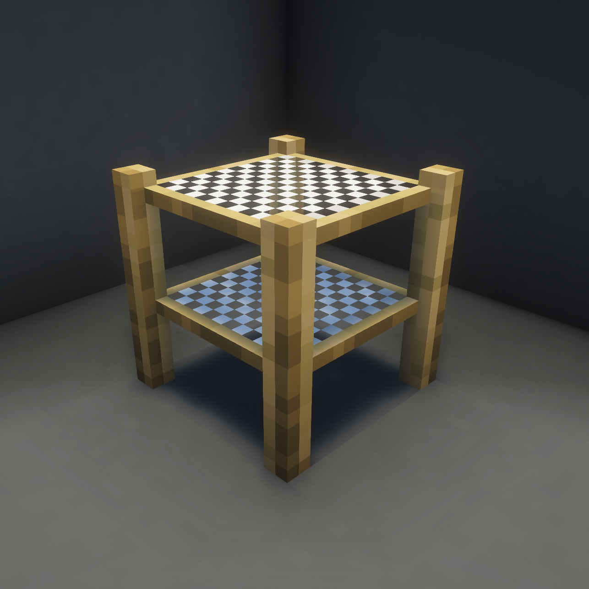
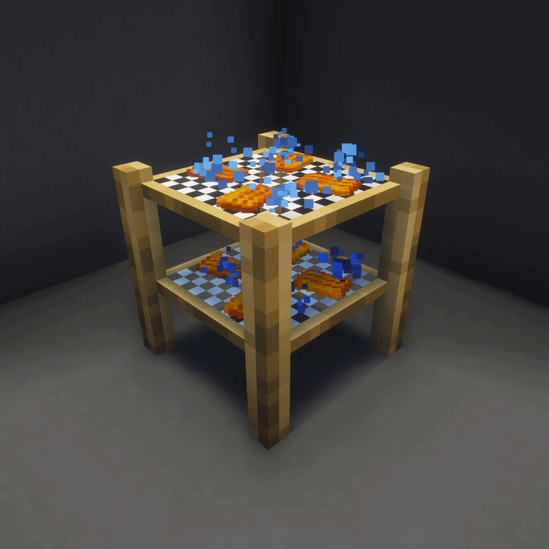

The Drying Rack can have a range of ingredients placed on it to create dried versions of them.
Shift + Right Click in order to remove items before and after drying them. Note that for removal, you must interact with an empty hand.
Note: If you are wearing a shield you will be unable to get items off the Drying Rack in the same way you cannot wear a Shield and open a door while crouching.
1.0
The Drying Rack can also dry sponges.

